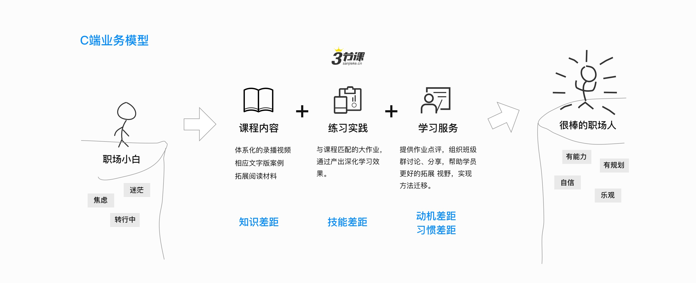
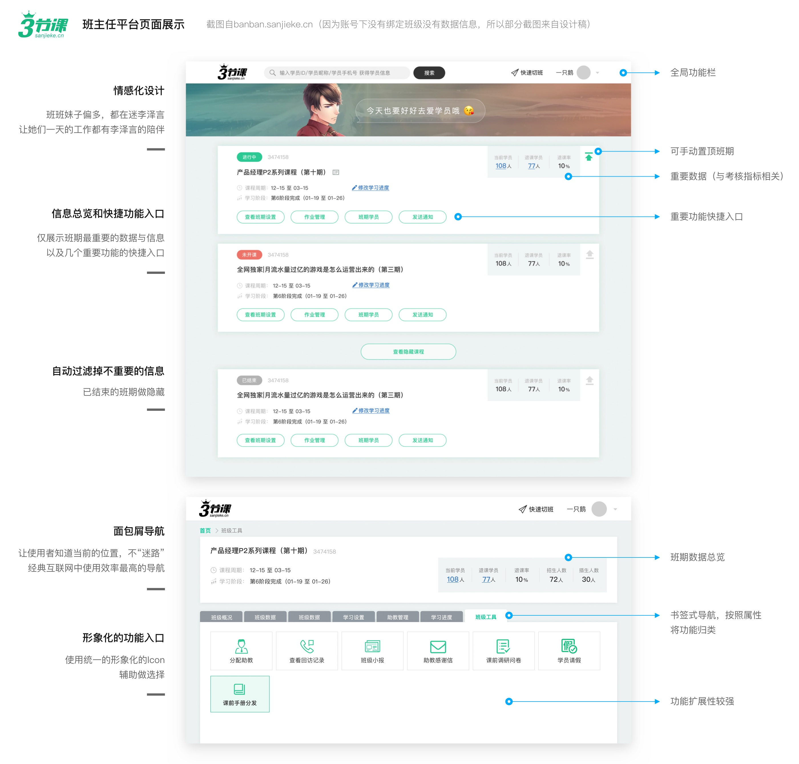
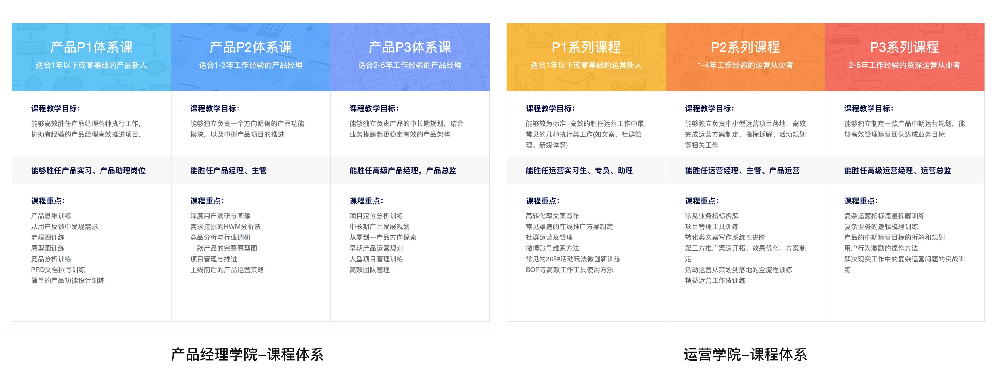
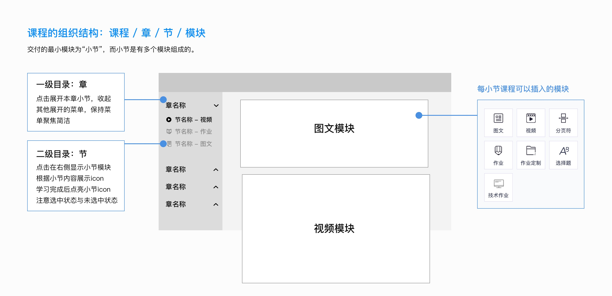

三节课是一所专注于“能力提升”的互联网人在线大学。提供体系化的线上课程与教学服务，为职场人提供可以立刻复用的方法和技能。解决“做不到”到“做到”的难题。
在业务变化很快的互联网公司中，员工需要不断的学习新知识，可是有些知识运用到实际工作中却会“水土不服”。为了将知识转化为能力，三节课做了很多行业研究，将每个岗位所需要的能力转化成相应的知识点+实践项目，帮助职场人更好的学习。
 如果你不了解三节课，那么先让我帮你介绍一下三节课的学习模式。如果你不感兴趣，可以直接跳到下一个模块。
三节课学习模式的五大特色
1、基于能力模型搭建课程体系
2、沉浸式学习系统
三节课的学习系统可以支持学员学习图文材料、视频讲解和作业的提交。
学习模式分为目录模式和笔记模式，分别对应不同的学习场景。
3、章节分割清晰。细致的颗粒度，增加用户对于课程的掌控感
4、与课程匹配的作业，通过产出深化学习效果
用户提交作业后，助教会及时做出批改，并给予你答案中存在的问题提出客观建议。
在作业交流区中可以看到大量其他学员提交的作业，以及助教在底部的点评。可以翻阅别人的解题思路，改进迭代自己的作业，还能与同学进行互动和交流。
5、学习社群延展，班主任辅导
每个训练营都有一个带班“班主任”，他（她）会全程陪伴，组织学员在群内讨论、交流。也会在学员要掉队的时候拉他们一把。这项服务是围绕微信群展开的。
三节课学习系统重构
PC端学习系统经过2年的迭代优化，不论是数据统计还是性能效率都存在了一些问题。我们在2018年底开启了学习系统重构的项目。从PC交付向APP+PC交付转移，最终实现全场景的学习，帮助用户更高效率、更高效果的完成学习。从以课程为中心的交付向以人为中心的伺服式学习，实现一本教材的个性化教学。